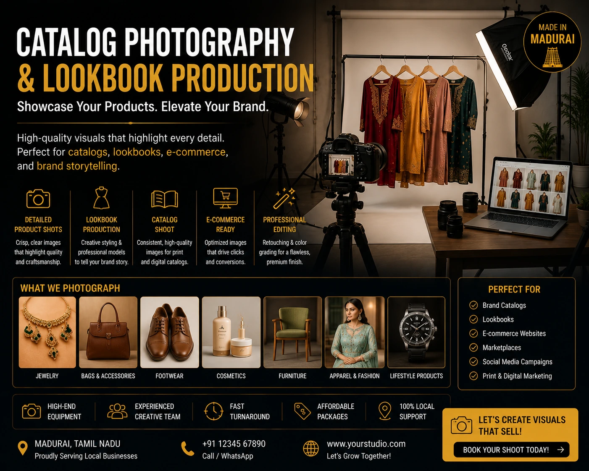
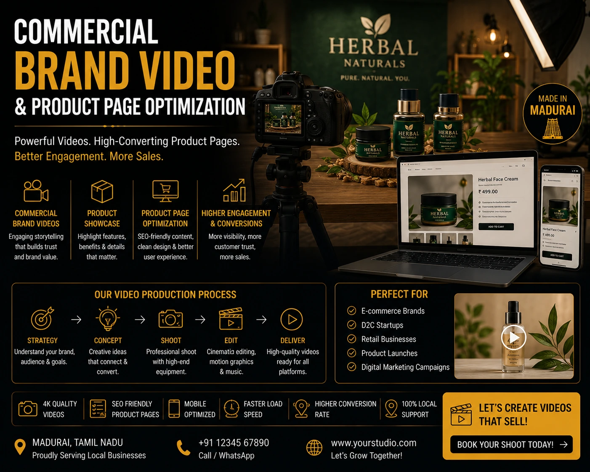

Scaling Beyond Footwear and Textiles: How Premium Website Visual Production Drives Local Retail Growth
The Visual Ceiling Holding Local Retailers Back
India's local retail sector is producing exceptional products. From handcrafted footwear in Agra to artisan textiles in Madurai, from premium leather goods in Chennai to heritage jewellery in Jaipur — the product quality exists. The craftsmanship is there. The price competitiveness is there. What is frequently absent is the visual production infrastructure that would allow these products to compete on equal terms with national brands in the digital marketplace where the majority of Indian retail growth is now happening.
Website and catalog visual production is the infrastructure gap between what a local Indian retailer produces and what an online buyer can see. A Madurai footwear brand with genuinely superior craftsmanship, photographed on a smartphone against a wall and uploaded to Shopify, is invisible in the same product category where a national brand with mediocre products but excellent photography is converting buyers at scale. The product quality is irrelevant if the visual production does not communicate it. And in 2026, the visual standard required to communicate product quality to an online buyer has never been higher.
What Premium Website Visual Production Actually Means
Website and catalog visual production at a premium level is not simply better-quality product photography. It is a complete visual content system — every image, video, and visual asset that appears across a retail brand's digital presence — produced with a coherent creative direction that communicates brand identity, product quality, and market positioning consistently across every touchpoint.
The components of a complete premium visual production system for a retail brand:
Hero and Campaign Imagery
The website hero banner, seasonal campaign images, and collection launch visuals that communicate the brand's overall positioning and aesthetic — the images a visitor sees before they see a single product.
Product Catalog Photography
Professional catalog photography — white background listing images, detail close-ups, multi-angle views — that meets platform compliance requirements and communicates product quality clearly enough to convert a first-time buyer.
Lookbook and Lifestyle Content
High-quality lookbook production showing the product range in curated, aspirational lifestyle contexts — the content that builds brand desirability rather than just product awareness.
Commercial Brand Video
Commercial brand video creation — brand films, product videos, and social media ad content — that communicates product quality, brand personality, and purchase intent in the formats that drive the highest engagement on every digital platform.

Professional Catalog Photography: The Foundation of E-commerce Conversion
Professional catalog photography is the most commercially essential visual asset a retail e-commerce brand produces. It is the image that appears in the thumbnail search result that determines whether a buyer clicks. It is the gallery that a buyer examines before making a purchase decision. It is the visual evidence that either confirms or undermines the trust that the brand's copy, reviews, and pricing are attempting to build.
For local Indian retailers expanding beyond their home city into national e-commerce, the standard of professional catalog photography required to compete has three distinct layers:
- Platform compliance layer. Every marketplace — Amazon, Flipkart, Myntra, Nykaa — has specific technical requirements for listing images: background colour, product fill percentage, image dimensions, prohibited content. Professional catalog photography is shot and processed to meet these requirements as a baseline, not as an afterthought. A listing image that fails platform compliance is rejected or suppressed by the algorithm before a buyer ever sees it.
- Quality communication layer. Beyond compliance, professional catalog photography communicates the specific quality signals that justify the product's price point: material texture, construction detail, finish quality, scale, and dimensional accuracy. These signals are communicated through lighting choices, focal length, depth of field, and composition — decisions that require production expertise and cannot be replicated with smartphone photography regardless of camera quality.
- Brand identity layer. Across a full product range, catalog photography should communicate a consistent visual identity — consistent background treatment, consistent lighting style, consistent colour grading — that builds brand recognition across the product grid and communicates that this is a brand with a considered aesthetic, not just a collection of individual product listings.
Retail Product Media Assets: Planning for Scale
For local retailers managing growing product ranges — a footwear brand adding fifty new SKUs per season, a textile retailer expanding into home goods, a fashion brand launching accessories alongside apparel — retail product media assets planning becomes a strategic operation rather than a reactive production task.
The most common planning failure for growing Indian retail brands: producing visual assets reactively — photographing products as they are launched, without a systematic approach to shot coverage, visual consistency, or multi-channel asset planning — and then discovering that the resulting image library is inconsistent in quality, incomplete in coverage, and formatted for only one of the five channels the products need to appear on.
The framework for strategic retail product media assets planning:
- Asset matrix by SKU and channel. For every SKU in the product range, define the complete set of images required across every distribution channel: marketplace listing images, website product page gallery, social media content, advertising creative, and lookbook. This matrix defines the total production scope before a shoot is booked.
- Group SKUs by setup type for production efficiency. All white background studio shots in one session. All model and lifestyle shots in another. All detail close-ups in a third. Setup grouping minimises the time cost of transitioning between production configurations and maximises SKU throughput per production day.
- Build a version-controlled asset library. Every final image delivered should be catalogued with a consistent naming convention — SKU code, image type, platform format, version number — stored in a shared library accessible to the e-commerce, marketing, and operations teams. An unorganised folder of image files that only the photographer can navigate is not a media asset library.
- Plan seasonal refreshes in advance. A retail brand producing a new season twice a year should be scheduling the visual production for each season six to eight weeks before the season launches — not the week before. Production timelines that compress into the launch window produce rushed work and missed asset coverage.
Product Styling for Online Shops: The Invisible Craft
Product styling for online shops is the least visible and most impactful element of professional catalog and lookbook production. Product styling is the discipline of preparing every product — and its surrounding context — for the camera in a way that maximises the visual communication of its quality, function, and desirability.
For different retail categories, product styling for online shops addresses different specific challenges:
Footwear
- Shoe trees and stuffing to maintain shape and communicate form
- Sole cleaning and finishing for close-up construction shots
- Lacing styles that photograph cleanly without slack or asymmetry
- Surface treatment to eliminate scuff marks and fingerprints from handling
Textiles and Apparel
- Steaming and pressing for crease-free presentation
- Invisible mannequin or flat lay styling for ghost mannequin effects
- Pin and clip placement to communicate fit without distortion
- Fabric arrangement to show drape and movement accurately
Home Goods and Décor
- Surface cleaning and polish for reflective materials
- Prop selection that communicates scale without competing with the product
- Colour coordination of supporting props with the product's palette
- Surface and background selection that complements rather than distracts
Professional product stylists — those who specialise in e-commerce and catalog styling rather than editorial or fashion styling — bring the technical knowledge to prepare every product for the camera in a way that maximises both visual appeal and platform compliance. Their work is invisible in the final image — because the mark of excellent styling is that nothing about the product's presentation draws attention to itself.
High-Quality Lookbook Production: Building Brand Desirability
High-quality lookbook production serves a different commercial purpose from catalog photography — and requires a different production approach. Where catalog photography communicates what the product is, a lookbook communicates what the product means: the lifestyle it belongs to, the aspirational context it inhabits, the identity it confers on the person who owns it.
For local Indian retailers scaling beyond their traditional categories, high-quality lookbook production is the investment that moves a brand from commodity to aspirational — from a product listing to a brand worth following, sharing, and returning to. The specific commercial impact of a well-produced lookbook:
- Higher average order value. Buyers who engage with a brand's lookbook content before purchasing consistently add more items to their cart than buyers who navigate directly to a product listing. Lookbook content sells the collection, not the individual item.
- Stronger social media performance. Lookbook imagery consistently outperforms catalog imagery on Instagram and Pinterest engagement — because it is designed for aspiration rather than information, which is the emotional register that social media audiences respond to most powerfully.
- Email marketing conversion. Seasonal lookbook content sent to an existing customer base as a campaign email produces higher click-through rates than product-listing promotional emails, because it communicates a reason to browse rather than a reason to buy a specific item.
- Press and influencer relevance. Fashion and lifestyle publications, and the influencers who serve similar audiences, feature brands whose visual content matches their editorial aesthetic. A brand with high-quality lookbook production is a brand that can be featured; a brand with catalog-only imagery cannot be.

Optimizing Product Page Images: The Technical SEO Layer
Optimizing product page images is the technical layer of website visual production that most retail brands — including those who have invested in professional photography — consistently fail to execute. Professional images that are not technically optimised for the web undermine the investment in production quality through slow page load times, poor SEO, and accessibility failures that are invisible to the brand but visible to Google and to every buyer on a mobile connection.
The complete checklist for optimizing product page images for an Indian retail e-commerce website:
- File format. Export all product images as WebP — 50 to 80% smaller than JPEG at equivalent quality. Use JPEG as a fallback for platforms that do not yet support WebP natively. Never upload PNG for product photography — the file sizes are prohibitive for web use.
- File size targets. Product thumbnail images: under 80KB. Product gallery images: under 150KB. Hero and banner images: under 300KB. Images significantly above these targets are the single most common cause of poor Core Web Vitals scores and high mobile bounce rates on Indian retail websites.
- Image dimensions. Upload images at exactly 2x the display dimension of your largest product gallery image for retina display quality. Uploading 5000px images displayed at 800px wastes bandwidth and slows load times without improving visual quality for the buyer.
-
Descriptive file naming. Every product image file should be named
descriptively before upload:
brown-leather-oxford-mens-size10-front.webpnotIMG_4521.webp. File names are indexed by Google Images and contribute to product page SEO. - Alt text on every image. Every product image alt tag should describe the image specifically: the product name, colour, material, and view. Alt text serves both screen reader accessibility and Google Image Search indexing — a product page with complete, descriptive alt text on every image has a measurable SEO advantage over one without.
-
Lazy loading for gallery images. The hero product image should load eagerly
with
loading="eager"andfetchpriority="high". All gallery images below the fold should useloading="lazy"to defer loading until the buyer scrolls to them — improving the page's initial load time and Core Web Vitals score.
Commercial Brand Video Creation: The Conversion Accelerator
Commercial brand video creation is the visual production investment that accelerates the conversion impact of every other asset in a retail brand's visual library. A brand film embedded in the website hero section communicates brand personality and product quality in a way that even the best static image cannot. A product video in the marketplace listing carousel increases conversion rate. A social media ad film earns higher click-through rates and lower cost-per-click than equivalent static image ads across every major Indian platform.
The priority commercial brand video creation investments for local Indian retailers scaling into national e-commerce:
- A brand origin or values film. A 60 to 90 second film telling the story of the brand — the craftsmanship, the heritage, the people, the process — that sits in the website hero or about page and communicates why this brand is worth choosing over a cheaper alternative. This is the content that converts price-sensitive browsers into values-aligned buyers.
- Product category showcase films. 30 to 60 second films for the brand's top product categories — footwear in motion, textiles being draped, jewellery catching light — that communicate quality through movement in a way that still photography cannot. These are the videos that sit in the marketplace listing carousel and on the Shopify product page, and that consistently improve conversion rate for the categories they cover.
- Social media ad films. 15 to 30 second platform-native ad content formatted for Instagram Reels, YouTube Shorts, and Meta Ads placements — the paid distribution layer that takes the brand's visual production investment and delivers it to precisely targeted new audiences across India.
Conclusion
The Indian retail brands scaling successfully beyond their traditional categories and home cities in 2026 are not doing so through better pricing alone. They are doing so through better visual production — professional catalog photography that communicates product quality clearly, high-quality lookbook production that builds brand desirability, retail product media assets managed strategically across every channel, product styling for online shops that makes every product look its best, optimizing product page images for both conversion and SEO, and commercial brand video creation that accelerates the trust-building that drives purchase decisions.
The visual ceiling that holds local Indian retailers back from national scale is not a product quality ceiling. It is a visual production ceiling. And it is one that a single, well-planned investment in premium website and catalog visual production can raise permanently.
At The PhD Ads, we specialise in website and catalog visual production for Indian retail brands — from professional catalog photography and high-quality lookbook production to commercial brand video creation and technically optimised product page image delivery, built for retailers ready to scale beyond their local market.
Key Topics
Ready to Build the Visual Infrastructure for Retail Scale?
At The PhD Ads, we deliver complete website and catalog visual production for Indian retail brands — professional catalog photography, lookbook production, product styling, commercial brand video, and technically optimised product page image delivery, built for retailers scaling beyond their home market.
Email: team@e2o.in